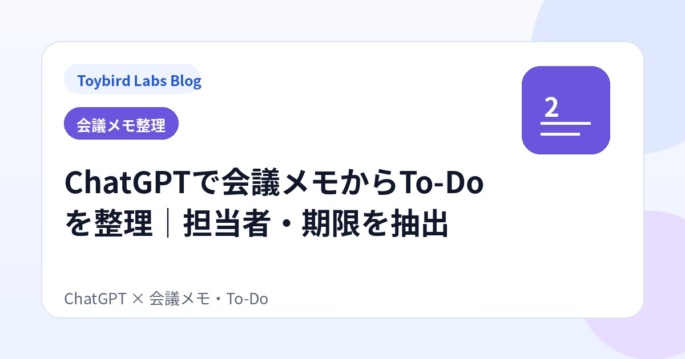
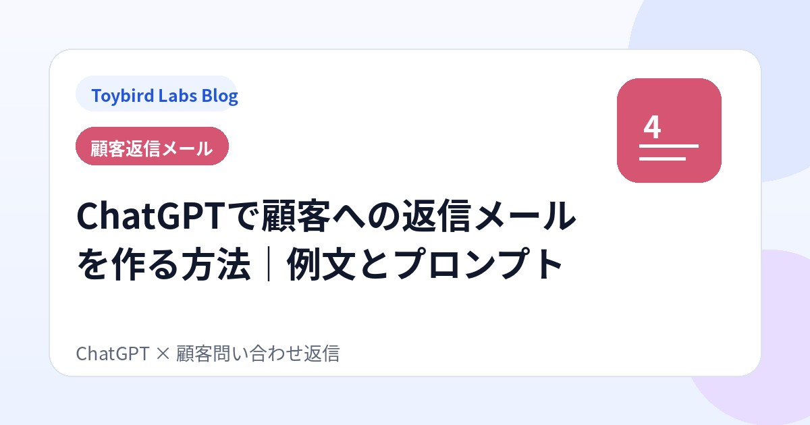

Toybird Labs Blog
仕事と学びを、
少し使いやすくする情報
生成AIの仕事活用、Mac・Windowsアプリ、学習支援など、実際に試せる具体例を中心に紹介します。
記事一覧
まず読む

生成AI・仕事効率化
ChatGPTの使い方｜仕事で役立つ指示（プロンプト）のコツと10の活用例
メール、要約、比較、調査、商談練習まで。仕事で使える10の活用例と、指示を具体化する5つのコツを紹介します。
業務別の実践ガイド

生成AI・仕事効率化
ChatGPTで取引先への断りメールを作る方法｜角が立たない例文とプロンプト
取引先からの依頼を断るメールをChatGPTで作る方法を解説。断る理由、代替案、期限を伝えるプロンプトと、追加作業・納期・値下げの例文を紹介します。

生成AI・仕事効率化
ChatGPTで会議メモからTo-Doを整理する方法｜担当者・期限・未決事項を抽出
ChatGPTで会議メモからTo-Do、担当者、期限、決定事項、未決事項を整理する方法を解説。雑なメモを業務で使える一覧へ変えるプロンプト例を掲載します。

生成AI・仕事効率化
ChatGPTの回答がずれる原因と修正方法｜期待通りに直す指示例
ChatGPTの回答が意図とずれる原因を整理し、長すぎる、文体が違う、事実が混ざるなどの問題を追加指示で直す方法とプロンプト例を解説します。

生成AI・仕事効率化
ChatGPTで顧客への返信メールを作る方法｜問い合わせ対応の例文とプロンプト
ChatGPTで顧客からの問い合わせに返信する方法を解説。元の問い合わせ、確認済みの事実、不明点、次の対応を入れたプロンプトと状況別の例文を紹介します。

生成AI・仕事効率化
ChatGPTに不足情報を質問してもらう方法｜質問させるプロンプト例
何を指示すればよいか分からないときに、ChatGPTへ不足情報を先に質問させる方法を解説。一度に一つ、最大3つ、選択式などのプロンプト例を紹介します。

生成AI・仕事効率化
ChatGPTで長い資料を目的別に要約する方法｜仕事向けプロンプト例
ChatGPTで長い資料や文章を仕事向けに要約する方法を解説。経営者向け、実務担当者向け、顧客説明向けに残す情報を変えるプロンプト例を紹介します。